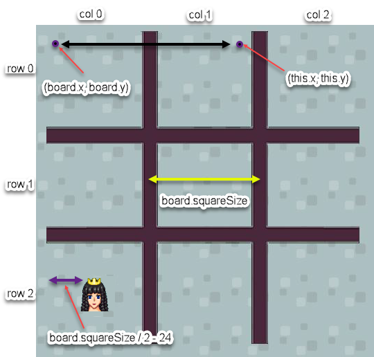

Puzzled Princess, Part 1
Princess Ann has caught the mysterious stranger at last! Stung by his claim that she is not yet ready to learn about the darkness foretold in prophecy, she rashly agrees to any test the stranger can devise.
Overview
The game is deceptively simple for humans, but programming the best play for the computer opponent is not an easy task, and will take us several hundred lines of code. Here is a broad-brush overview of where we are going:
Type or paste this into your code window.
x
import {game, Sprite} from "./sgc/sgc.js";game.setBackground("floor.png");class Marker extends Sprite { }class PrincessMarker extends Marker { }class StrangerMarker extends Marker { }class TicTacToe extends Sprite { }let theBoard = new TicTacToe();theBoard.takeTurns();That's what the whole program will look like, using the collapsed view in the code window (you can use the little white triangles in the left margin to expand or contract the class definitions). For now this will serve as a useful outline that we can fill in as we go.
The
TicTacToeclass will keep track of the moves on the board and whose turn it is, and when someone wins loses or draws. Its methods will be:- takeTurns()
- markSquare(row, col, forOpponent)
- unmarkSquare(row, col)
- getSquareSymbol(rol, col)
- gameIsWon()
- gameIsDrawn()
- countWinningMoves(forOpponent)
- debugBoard() - for printing the current state of the board to the console window
The
Markerclass places one of the children class marker images on the board with aplayInSquaremethod.The
PrincessMarkerderived class will handle click-and-dragging the Princess marker onto the board. This is the player's move.The
StrangerMarkerderived class will handle finding the best play for the computer opponent.
Let's start with the board.
Create the board
Define a class called
TicTacToe, derived from theSpriteclass whose constructor function accepts no arguments and does the following:
- Gives it a name.
- Uses the
board.pngimage file. - Sets its position to (x,y) = (300, 85).
- Defines a custom variable called
SquareSizeand sets it equal to 150 (the number of pixels on each side of a board square). - Defines a custom variable called
sizeand sets it equal to 3 (for a 3 by 3 board). - Declares but does not initialize a custom variable called
activeMarkerlike this:
xxxxxxxxxxthis.activeMarker; // variable exists, but value is undefinedIn the overview you notice we call a takeTurns method to kick everything off. We'll write enough of that now so that we can start testing the code we have written so far.
Start the game with the player moving first
Later we will sometimes let the Stranger play first, but for now we want to test our ability to click and drag our Princess marker onto the game board, so we will let her go first.
Inside the
TicTacToeclass definition, define a method calledtakeTurns()that accepts no arguments and contains only the following line:
xxxxxxxxxxthis.activeMarker = new PrincessMarker(this);In our program, the theBoard object is the only instance we will make of the TicTacToe class, so the constructor of the PrincessMarker class will always be using theBoard as an argument for its constructor. Let's define the parent Marker class before the PrincessMarker child class.
The Marker parent class
Define a class called
Markerwhose constructor function accepts three arguments(board,image, andname) and does the following:
- Calls the parent class constructor
- Sets the
board, andnameproperties for each instance of the class equal to the values passed as arguments to the constructor (for examplethis.board = board;and so on) - Set the image using the string passed to the
imageargument - Sets its position to (x,y) = (150, 275).
The PrincessMarker child class
This is where you will implement drag and drop so that the player can use the mouse to move the princess game markers.
Define a class called
PrincessMarkerthat is a child of theMarkerclass and whose constructor function accepts an argument calledboardand which does the following:
- Calls the parent class constructor, passing it the values of
board,'annFace.png', and'Princess Ann'forboard,image, andnamerespectively. HINT: use thesuperkeyword like you did in previous tutorials. - Defines a custom variable called
draggingand sets its value tofalse.
The dragging flag will keep track of whether or not we left-clicked on a Princess marker.
Still in the PrincessMarker class definition:
Define a
handleMouseLeftButtonDown()method that setsdraggingtotrue.Define a
handleMouseLeftButtonUp()method that setsdraggingtofalse.Define a
handleGameLoop()method that tests the value ofdragging. When it istrue, the instance is being dragged, so it should move to the mouse pointer's location. You will need to use thegame.getMouseX()andgetMouseY()methods, like this, for example:
x
this.x = game.getMouseX() - this.width / 2;We subtract half the width (or height for y) of the sprite so that the center of the sprite will land where we release the mouse, instead of the upper left hand corner, where its origin is.
Run your game and verify that:
- The board and princess markers appear over the floor background.
- You can click and hold the left mouse button on a marker to "drag" it, and
- release the left mouse button to "drop" the marker anywhere in the room.
Controlling the drop
Now we need to add some logic to control where the markers can be dropped. When a marker is dropped at a spot that is not allowed, it will automatically jump back to its original position.
For that we will need to know the original position of the marker (i.e. the x and y coordinates in the Marker class constructor method).
In the constructor method for
Marker, create custom variablesstartXandstartYand set their values equal to the originalxandycoordinates. You may find the chained assignment version useful again (for examplethis.x = this.startX = 150;)
To know if the spot is allowed, we could find the row and column that the marker is in, and see if it is within the 3x3 board. For that we will need to know the origin of the theBoard (which is an instance of the TicTacToe class) as well as its square size and board size. Later we may also want to verify that the square is unoccupied.
Passing by reference
How do we access the properties of the theBoard board from another class definition? If theBoard object existed before run-time (like with an object literal), we could just say theBoard.x for example. Unfortunately this object does not exist until the program starts. One way around this is to pass the name of the instance to the class! In essence we are passing an object to a method as an argument, instead of passing a value to a method as an argument, like we have been doing so far. This is referred to as "passing by reference" (as opposed to "passing by value"). When we pass by reference, we can modify the object's properties if we want to. There is a more lengthy comparison of passing by value or passing by reference here.
For example we can refer to x property of theBoard object from the PrincessMarker class like this:
x
this.board.xx is a property of whatever object board refers to, and board is a property of the current instance of the PrincessMarker class. A property of a property! This is hard to grasp so let's take a moment to summarize what we have done so far.
Look back at the overview section for a moment. Notice on the second-to-last line we are creating an instance of the TicTacToe class called theBoard. Like every member of its class, theBoard has a method in it called takeTurns(), which we call in the last line of the code. The takeTurns() method creates an instance of the PrincessMarker class, and it passes the name of theBoard to the PrincessMarker constructor method! Look at your takeTurns() method again to confirm this:
xxxxxxxxxxthis.activeMarker = new PrincessMarker(this);Here this refers to an instance of the TicTacToe class - meaning theBoard in our case. The constructor method of PrincessMarker calls the constructor of the parent Marker class, which makes game a property of any instance of the Marker class with the this.board = board; command. There is a lot of complex programming happening here; you can be proud of your accomplishment if you can follow this line of reasoning.
Computing the board row and column
Here is how we want to identify the rows and columns on the board:

Remember the length of the yellow line is stored in the squareSize property of (an instance of) the TicTacToe class. Notice the top row of the board is numbered 0, and the bottom row is numbered 2.
In the
handleMouseLeftButtonUpmethod ofPrincessMarkerclass, define a local variable calledrow. Devise an expression (a formula) that calculates the game board row number that the instance was just dropped in and store this value inrow. The value should be rounded down to the nearest integer (i.e. truncated so that 2.9 become 2 for example). TheMath.floor()method might be useful.
I know you can just use 150 for this but challenge yourself to use the property name in your expression. It will be a good test of your understanding of the "property of a property" thing, and it will make your code easier to maintain if you should choose to change the board size (and therefore the size of the squares) at some later date.
There is no need to limit your expression to values of 0 to 2. In other words, when a marker is dropped above or below the board, the value computed by the expression will not be in the range 0 to 2. This is not a problem; it will become useful later.
To test the correctness of your expression, add the following statement to the
handleMouseLeftButtonUpmethod, then run the game. Test all three rows, as well as positions above and below the game board.
xxxxxxxxxxwindow.alert("The row number is " + row);
Do not proceed until the expression is correct.
Declare a local variable named
col(short for "column"), and use it to store the number of the board column. This is computed with an expression similar to the one that computes the row number.
As before, test by using a console message to show the column number that is computed.
Do not proceed until the expression is correct.
Remove all
window.alertstatements used for testing.
Preventing drops outside the board
We can use these values of row and column to determine if the marker has been dropped within the board.
Within the
handleMouseLeftButtonUpof thePrincessMarkerclass, write anifstatement to test if the row and column are outside the playable area using thegame.sizeproperty. If so, set the marker'sxandycoordinates to their original positions (startX,startY) and exit the method with areturnstatement.
The return statement stops the execution of a function and returns a value from that function. We will be using it a lot in this tutorial so you might want to familiarize yourself with its syntax and usage.
Centering the marker
The game display will be much cleaner if markers are placed neatly in the center of game board squares. The player, however, may drop them off-center. In fact, the current programming will allow the player to drop markers on the dividing lines of the board. This is messy and confusing. You will now add code to reposition the marker in the center of the square it was dropped in.
Inside the class definition for the
Markerclass, define a method calledplayInSquarethat acceptsrowandcolas arguments and changes the values ofthis.xandthis.yso that the marker is horizontally and vertically centered in the square where it was dropped. You must devise an expression to compute the correct x and coordinates. Please use thethis.game.x,this.game.yandthis.game.sizeproperties again instead of their numeric values.At the end of the
handleMouseLeftButtonUpmethod of thePrincessMarkerclass, add a call tothis.playInSquare(row, col).
We would like to follow this with a call to theBoard object's takeTurns() method. Remember that theBoard is an instance (which is created at run-time) of the TicTacToe class. How can we refer to an instance that doesn't yet exist? If you need a reminder about how you might do this, review the Passing by Reference section.
At the end of the
handleMouseLeftButtonUpmethod of thePrincessMarkerclass, add a call to thetakeTurns()method of the game object that is passed to thePrincessMarker's constructor.
Test and correct your game until it shows the desired behavior.
We still need to prevent the player from dropping a marker on top of an existing marker, or moving a marker that has already been placed. We will do that in part 2.
Wrapping Up
For more insight into two-dimensional arrays, read Ushers, Peanut Vendors, and Matrix Indices.
Puzzled Princess, Part 2
Modeling the state of the game
In order to program sophisticated tic-tac-toe play, we will need to model the state of the game with data.
Add the following to the constructor method of the
TicTacToeclass definition:
xxxxxxxxxxthis.board = [];for (let row = 0; row < this.boardSize; row = row + 1) { this.board[row] = []; for (let col = 0; col < this.boardSize; col = col + 1) { this.board[row][col] = this.emptySquareSymbol; }}This creates and initializes an array that will model the contents of the tic-tac-toe board. Unlike the one dimensional arrays you have seen so far, board will be a two-dimensional array. You can think of it as a matrix or a data table with rows and columns. JavaScript does not have a special syntax for creating multidimensional arrays. A common workaround is to create an array of arrays in nested loops like we did here.
The board array has three rows and three columns, for a total of nine cells. The code sets each of the nine cells to contain the value ofemptySquareSymbol (which we want to be a dash).
- [ ] Create a custom variable in the constructor of the TicTacToe class called emptySquareSymbol and set its value to '-'. This has to be declared before we use it in the nested for loops.
The code uses two loops to access every cell of the array. One loop is "nested" inside of the other. The outer loop generates three row arrays (indexed from 0 to 2). The inner loop generates column numbers 0 to 2, for whatever the row array index happens to be.
In other words, the innermost assignment statement is executed nine times, once for each array cell. The inner loop causes it to repeat three times, and the outer loop causes all that to repeat three times. Three repetitions of the outer loop multiplied by three repetitions of the inner loop makes nine repetitions in total: 3 x 3 = 9. You can always compute the total repetitions of nested loops by multiplying the repetitions of each individual loop.
Study this nested for loop pattern carefully. This is the key to processing two-dimensional arrays, and this pattern will recur throughout this game project.
As a test of your understanding, see if you can figure out which is the fourth cell of the array to be marked empty.1
Now when the game starts (i.e. when we create an instance of the TicTacToe class called theBoard), a board array will be created, as a model of the empty game board.
Using substring to pick out a marker symbol from the name
We already have a symbol for an empty square (-). We should also define symbols for the stranger and the princess markers. We could define these separately in the class definitions for the PrincessMarker and StrangerMarker, but a more elegant way is to do it in the parent class by using the first character of whatever name is passed to the parent class constructor with JavaScript's substring method. You can read more about substring here.
Add this line to the constructor of the
Markerclass definition (after you create thenameproperty):
xxxxxxxxxxthis.squareSymbol = this.name.substring(0, 1);The name property is a string of characters (or string for short). In our program, the name property could refer to the string 'Princess Ann' or the string 'Stranger'. Remember the first element of an array (or string - which is an array of characters) is numbered 0, so substring(0, 1) extracts the characters in the string between 0 and 1, not counting the 1, which is to say, it extracts the first character in the string. Thus, the squareSymbol property for any instance of the PrincessMarker class will be a 'P' since we passed the parent class the name 'Princess Ann' in our super call, and similarly 'S' will be the square symbol for any instance of the StrangerMarker class.
Debugging the board array
The array is only data stored in the computer memory; it is not an instance with a sprite that you can see on the screen. Nothing on the screen gives any indication of its contents either -- unlike x, y coordinates, speed values, etc. This invisibility will be an advantage when programming tic-tac-toe strategy, but it is a bit difficult to get used to.
More importantly, it will be difficult to know with certainty if the array contents correctly model the visual board. We could sure use something to let us "see" that array.
In the
TicTacToeclass definition, outside the constructor, define a method nameddebugBoard, containing the following code:
xxxxxxxxxxdebugBoard() { let boardString = '\n'; for (let row = 0; row < this.boardSize; row = row + 1) { for (let col = 0; col < this.boardSize; col = col + 1) { boardString = boardString + this.board[row][col] + ' '; } boardString = boardString + '\n'; } console.log('The current state of the board is ' + boardString); }The purpose of this method is similar to the dialog boxes that you temporarily used in the previous part of the tutorial: to display internal data values so that you can check their correctness. But instead of calling window.alert() to display a dialog box, this method calls console.log(). This JavaScript method displays its string argument in the console window. The console window is visible whenever you open Developer Tools inside a browser window (use F12 or Ctrl+Shift+i on PC or Cmd+Opt+i on Mac). This is where we want it, because debug messages are for the programmer's use only, and not part of the program's "real" output.
The first step of the method adds an empty line (a string containing the escape sequence '\n' for "new line" ). This creates a blank line at the top of the output, which is helpful for readability. Then we have nested loops that visit each cell of the array. Notice the termination tests of these loops: the inner and outer loop call this.boardSize. Both of those board property names could have been replaced with the number 3. Although that would be simpler, it would not be nearly as flexible and safe. By using the board properties, the loops are correct, even if the size of the array changes. (For example, you might decide to transform the 3x3 board into a larger game like Connect 4.)
For each row, a string is built. It is set to be an empty carriage return at the top of the outer loop. The inner loop concatenates the contents of each of that row's columns, with two spaces separating them. After the the inner loop completes, another new line escape sequence is added. After the outer loop completes, the string is displayed.
In the output, empty board squares will display as a dash (minus sign), princess marker squares will display with a capital letter "P", and stranger marker squares will display with a capital letter "S".
With this debug script in hand, you are ready to take the next step in using the array.
Updating the board array
You need to update the board array whenever a marker is placed on the board.
Modify the playInSquare programming that places a marker on the board in the Marker class definition.
First, add an assignment statement that stores
this.squareSymbolin the array cell that corresponds to the board row and column. Remember how to access theboardarray, which is a property of whicheverTicTacToeinstance gets passed to theMarker's constructor. HINT:this.board[row][col]won't work here becauseboardis not (directly) a property ofMarkerclass instances.
Next, add a call to
TicTacToe'sdebugBoard()method so that you can check the array contents. Same comment applies.
Run the game, and test by dropping markers in various board positions. Verify that the debug output shows the array matching the game board.
An example of correct debug output is shown in the figure below.

The compile window, shown on the right side, contains the output from three calls to the debugBoard() method. It shows that the array contents correctly reflect the visual game board. Do not continue until your debug output correctly matches the visual game board.
Adding a turn counter
In TicTacToe 's debugBoard definition:
Create a local variable called
moveCountand set its value to zero.
Replace your
console.logstatement with this one:
xxxxxxxxxxconsole.log('The board after ' + moveCount + ' move(s):' + boardString);We need some way to increment the moveCount variable for every square that isn't empty. We already have a nested for loop that visits every square on the board, so we might as well have it do this other task for us besides growing the boardString string:
Inside the column loop of the nested
forloops, test to see if the current square contains theemptySquareSymbol. If it does NOT, increase the value ofmoveCountby one. Again, challenge yourself to use the property name instead of the character '-' (HINT: it is a property of theTicTacToeclass instances).
Run the game again, and test by dropping markers in various board positions. Verify that the debug output displays the turn number correctly.
Locking markers on the board
At this point, it is possible to move markers that have been placed on the board. This can lead to incorrect array contents, because the array is not updated when a marker is removed from a board square. Of course, it is also against the game rules, so it is time to prevent it.
One way to do this, is to create a flag that indicates whether or not the marker has been played, and then check that flag before we do any mouse button handling.
In the Marker class definition:
Inside the
constructormethod, define a variable calledinBoardand set its value tofalse.In the
playInSquaremethod, set the flag totrueto indicate that the marker has been played to a valid square.
In the PrinessMarker class definition:
- [ ] At the very beginning of the handleMouseLeftButtonDown and handleMouseLeftButtonUp definitions, test to see if the flag has been set to true. If so, exit the method with a return statement. Remember, you don't have to use if (this.inBoard === true). The Boolean variable inBoard returns true all by itself! It is more elegant and efficient to use if (this.inBoard) to do the same thing, and to design your flag names to make code like this readable.
Run the game and verify that markers cannot be moved after they are dropped in the game board.
Controlling the drop, take 2
You may have noticed that there is a problem when you drop one marker on top of another. The program doesn't increment the turn counter but it does call takeTurns() again, which will create a problem when we start playing with the stranger.
We will need to add some logic to prevent this and to have the marker automatically jump back to its original position if placed on another marker, just like we did when it was dropped outside the confines of the board in this section. This is a task for our board array!
In
PrincessMarkerhandleMouseLeftButtonUp()method definition, add another OR condition to theifstatement that checks to see if the marker was dropped outside the playable area: the condition is "is there NOT an empty square symbol in this square?"
Run the game and verify that the marker returns to the start position if placed on another marker, without calling takeTurns().
That takes care of the player move and game state-modeling. Next we will program the NPC's move.
Puzzled Princess, Part 3
The stranger moves
Now that the player can drag princess markers onto the board, it is time to program the NPC stranger's moves. For now, the stranger will make the simplest possible legal move: taking the first open square that it finds by randomly searching. Later, the stranger's play will become very sophisticated.
First let's make a StrangerMarker class much like the PrincessMarker class:
Define a class called
StrangerMarkerthat is a child of theMarkerclass and whose constructor function accepts an argument calledgameand which does the following:- Calls the parent class constructor, passing it the values of
game,'strangerFace.png', and'Stranger'forgame,imageFile, andnamerespectively.
Inside the StrangerMarker class definition, outside its constructor:
- [ ] Define a handleGameLoop() function that contains the following code
xxxxxxxxxxif (this.inBoard) { return;}Just like we did to "lock in" princess markers that had already been placed in the board, we use the inBoard flag to skip every StrangerMarker instance that has already been played. We can think of this as "do nothing if the marker has already been played." Remember, this is the game loop method for every instance of the class, and we really only want to find a move for the marker that hasn't yet been placed.
- [ ] Add the following to the same handleGameLoop() method:
xxxxxxxxxx// Mark a random empty square.let row, col;do { row = Math.round(Math.random() * (this.game.boardSize - 1)); col = Math.round(Math.random() * (this.game.boardSize - 1));} while (this.game.board[row][col] !== this.game.emptySquareSymbol);this.game.board[row][col] = this.squareSymbol;this.playInSquare(row, col);this.game.takeTurns();This introduces a valuable, and somewhat dangerous new looping construct. The do loop is executed as long as the condition after while is satisfied. Therein lies the danger: it is possible to create a loop that will never terminate, possibly locking up your browser window. In fact, this loop will do just that once all the empty squares are taken. Please read this short w3schools article for an explanation of the do/while statement.
In this case, we keep trying random column and row numbers between 0 and 2 until we find a square that is empty. Then we mark that board square with the stranger symbol ('S'), place the marker in the right place, and call the takeTurns method.
Next we have to modify our takeTurns method so that stranger can make his move. We will take advantage of the way we declared the activeMarker variable in the constructor of the TicTacToe class to do something special on turn 1. Recall that we created the variable, but didn't give it a value.
Start the game with a random choice of player
In the takeTurns method of the TicTacToe class:
- [ ] Remark out (with // ) the line that makes the active marker an instance of the PrincessMarker class.
- [ ] Test to see if the activeMarker marker does not have a value, like this:
xxxxxxxxxx if (!this.activeMarker) Remember the ! is the NOT operator so if activeMarker has a value (which is to say is defined), this.activeMarker will return true. So far, the activeMarker variable has been declared but has no value so this.activeMarker will return false.
- [ ] If it does not, flip a coin to make it either an instance of PrincessMarker class, or (else) the StrangerMarker class. HINT: Math.random() will return a value of less than 0.5 about 1 time out of 2.
You already know how to make activeMarker an instance of the PrincessMarker class -- you have it remarked out. Now you can remove the // and paste it into the right place!
Taking turns
After the random choice of starting player, the game should create an appropriate marker for each turn. The princess markers will be dropped onto the board by the player, and the stranger will move to a random open square.
In the takeTurns method of the TicTacToe class definition:
- [ ] Add the following code after the if statement that checks to see if activeMarker is undefined:
xxxxxxxxxxelse if (this.activeMarker instanceof PrincessMarker) { // princess has moved; now it's stranger's turn this.activeMarker = new StrangerMarker(this);}else if (this.activeMarker instanceof StrangerMarker) { // stranger has moved; now it's princess's turn this.activeMarker = new PrincessMarker(this);}This checks the current activeMarker instance to see which type of marker it is (i.e. what class it originates from), and creates a marker of the other kind.
Run the game, and verify that:
- either a princess or a stranger marker is created at first,
- whenever a stranger marker is created, it goes into a random empty board square (if any), and a new princess marker is created,
- whenever a princess marker is created, nothing happens until it is dropped into a board square, and then a new stranger marker is created, and
- the debug output shows that the array is kept in sync with the screen board.
Do not continue until this is working properly.
It's not over until the program figures out that it's over
At this point, turn-based play between a human player and an NPC is working. However, the programming does not know if one player wins, or if a full board makes the game a draw. Your next task is to address this.
- [ ] Edit the takeTurns method in the TicTacToe class, adding the following code at the top:
xxxxxxxxxxif (this.gameIsWon()) { let message = ' Game Over.\n '; if (this.activeMarker instanceof PrincessMarker) { message = message + 'The Princess wins.'; } else if (this.activeMarker instanceof StrangerMarker) { message = message + 'The Stranger wins.'; } gameController.endGame(message); return;}if (this.gameIsDrawn()) { gameController.endGame(' Game Over.\n The game ends in a draw.'); return;}This completes the end-of-game programming with appropriate endGame messages, but the logic that triggers it calls two methods that do not yet exist. Time to write them.
Is the game won?
- [ ] In the TicTacToe class definition, define a method called gameIsWon() with the following partial code:
xxxxxxxxxx// Are there three of the same markers diagonally from upper left?if (this.board[0][0] === this.board[1][1] && this.board[1][1] === this.board[2][2] && this.board[2][2] !== this.emptySquareSymbol ) { return true;}This is the complete logic for testing the diagonal that begins in the upper left corner. If the three cells in that diagonal all match the symbol of the current marker, the script returns true to indicate that the player using that marker has won the game.
- [ ] Add (very similar) code to test the other diagonal.
- [ ] Write a loop to determine if there are three in a row horizontally. For each row, test if all three cells match the marker. If so, return true.
- [ ] Write a loop to determine if there are three in a row vertically. For each column, test if all three cells match the marker. If so, return true.
The last line of the method should return false, to indicate that there were not three of the marker in a row.
Is the game drawn?
- [ ] In the TicTacToe class definition, define the gameIsDrawn() method. Write nested loops to examine each cell of the array. If the square is empty, return false. The last line (outside the loops) should return true; the game is a draw if all squares are full.
Run the game and verify that you can play against the (really weak) opponent until the game ends. Test as many different kinds of final patterns as possible: horizontal wins, vertical wins, diagonal wins, and draws.
Test and troubleshoot your programming until it is working correctly.
You now have a working game, and can focus on implementing perfect NPC play.
Puzzled Princess, Part 4
Improving the stranger's moves
Currently, the stranger's Create event selects a move by claiming the first empty board square it finds. You will now replace this with the first step toward perfect play.
Perfect play in Tic-Tac-Toe can be expressed by applying the following rules, in the order listed.
If you have a winning move, take it.
If your opponent has a winning move, block it.
If you can create a fork, do so. (A fork sets up two winning moves simultaneously. An opponent cannot block them both in one turn.)
If your opponent can create a fork, prevent it. There are two ways to do this, listed in order of preference.
- Create a winning threat that forces your opponent to block you instead of creating the fork. (You must be careful that the square that will block you is not the square that creates the opponent's fork.)
- Take the square that would create a fork for your opponent.
If the center square is open, take it.
If there is an open corner that is diagonally opposite a corner held by your opponent, take it.
Take any open corner square.
Take any open square.
Time to implement this logic in JavaScript.
- [ ] In StrangerMarker's handleGameLoop method definition, insert the following code after the statement that does nothing if the marker has already been played.
xxxxxxxxxxlet foundMove = this.findWinningMove();if (!foundMove) { foundMove = this.findWinningMove(true);}if (!foundMove) { foundMove = this.findForkingMove();}if (!foundMove) { foundMove = this.findForkingMove(true);}if (!foundMove) { foundMove = this.findCenterMove();}if (!foundMove) { foundMove = this.findOppositeCornerMove();}if (!foundMove) { foundMove = this.findAnyCornerMove();}if (!foundMove) { foundMove = this.findAnySideMove();}if (!foundMove) { // Mark a random empty square.}if (!foundMove) throw new Error('Failed to find a move.');this.game.takeTurns();The second-to-last if statement remark implies "if you haven't found a move, pick a random square." You already have this code.
- [ ] Move your "mark a random square" code inside the appropriate if statement. Add a line at the end of it that sets the foundMove flag to true.
This is the outline for perfect Tic-Tac-Toe play. The first method called will play a winning move if one exists, and return a Boolean value to indicate if it found one. That Boolean value is stored in the foundMove flag. If the flag is set to false (i.e. no move was found), the next method is called, which looks for the opponent's winning move and blocks it.
This continues until one of the eight methods finds the move it is looking for, calls playInSquare to update the game board, and returns true. Then, a call to takeTurns() hands control to the princess player. If no move was found, we display an error message with the Javascript Error object. If you like, you can learn more about the Error object here, and about the throw statement here .
- [ ] Create eight new methods in the StrangerMarker class, with names that match the calls shown above (findWinningMove through findAnySideMove). For now, each script contains a single statement: return false;. There are two methods in the stub list that are passed (Boolean) values. Please use forOpponent in the argument list for those methods when you define them. This will make more sense later.
Run your program to make sure everything still works as before.
A preliminary version of a method that does (nearly) nothing can be a useful way to ease into complex programming. Programmers call these methods "stubs."
When all the stubs are replaced with complete logic, the stranger will play a perfect game.
A word about encapsulation
So far, if we have wanted to get information about the board array, we just accessed it directly using game.board[row][col]. It was the quickest way to get us up and running with a working game. The problem with this approach is that it ignores one of the fundamental principles of object-oriented programming: encapsulation. Ideally, the Marker class, for example, should not have to know anything about the data structures (like board array) we use in the TicTacToe class. If we decide to change anything about the board array (row/column order, dimension, name, what symbols mean, etc.) it would break any other code that tried to access it. Far better to use methods, defined within the TicTacToe class, that other classes can use to retrieve (get) and modify (set) the values in the array. There are other benefits too, which will become clear when we write our first move-finding method. Let's create these "getter" and "setter" methods now.
Getter:
- [ ] In the TicTacToe class, define a new method called getSquareSymbol that accepts two arguments: row and column, and contains the following code:
xxxxxxxxxxreturn this.board[row][col];Setter:
- [ ] In the TicTacToe class, define a new method called markSquare that accepts three arguments: row, column, and forOpponent, and which contains the following code:
xxxxxxxxxxlet squareSymbol = this.activeMarker.squareSymbol;if (this.getSquareSymbol(row, col) === this.emptySquareSymbol) { this.board[row][col] = squareSymbol; return true;}return false;Already one of the benefits is clear - we don't have to re-use the code that checks to see if the square is empty first every time we want to mark a square! Now the function will just return false if the square was already filled, and won't try to change the value in the square. We will use the third argument a little later.
- [ ] Modify your code in the PrincessMarker class to use the getter function instead of this.game.board[row][col] .
While we are at it, let's also write a method that unmarks the square; we will need this soon.
In the
TicTacToeclass, define a new method calledunmarkSquarethat accepts two arguments:row, andcolumn, and which contains the following code (and nothing else):
xxxxxxxxxxthis.board[row][col] = this.emptySquareSymbol;There; we'll never have to use board[row][col] outside of the TicTacToe class ever again. Run your program to make sure everything still works as before.
Writing the move-finding methods
- [ ] Complete the findCenterMove method. It should first find the number of the center row and column and store that value in a local variable called center. It should then test the array to see if the center square is empty. Remember to use your new setter method from the TicTacToe class -- it returns false if the square is not empty, so it is the perfect thing to put in your if statement. In addition, calling the method marks the square in the board array, saving you a separate step! So, if markSquare() is true, your method should call playInSquare(center, center) and return true. If not, the method returns false. Since you "know" that the board is 3x3, you could use the number 1 in place of center, but challenge yourself to find the center row or column of the board, regardless of the value of game.boardSize. HINT: Math.floor() could come in handy.
- [ ] Complete the findAnyCornerMove method. It should use TicTacToe's setter function again to test corner squares. If one is empty, the method should play there (calling playInSquare) and return true. If all corner squares are taken, the script should return false. Again, use local variables to find the corners, using the value stored in game.boardSize instead of assuming row number 2 and column number 2 are the last row and column.
- [ ] Complete the findAnySideMove method. (A side square is any square that is neither the center nor a corner.) The method should use the TicTacToes's setter function to test side squares. If one is empty, the script should play there (calling playInSquare) and return true. If all side squares are taken, the script should return false. For an extra challenge, use for loops to find the sides, because we might want to make the boardSize value bigger than 3 in the future.
At this point, the stranger plays a complete, but not perfect game. That is, the NPC will always find a legal move, and play with a bit of skill. Since the incomplete stubs simply return false (meaning "no move found") it is possible to run the game at this point.
Run the game and test that:
- the first move is given to the stranger or the princess at random,
- the stranger moves to the center any time it is empty on his turn,
- the stranger moves to a corner if there is an empty one and the center is taken,
- the stranger moves to an empty side square as a last resort, and
- the game ends with the appropriate win/lose/draw message.
Troubleshoot and debug the game until it is working correctly.
- [ ] Complete the findOppositeCornerMove method. It is similar to findAnyCornerMove except that it tries to play an empty corner that is diagonally opposite a marker belonging to the opponent. One way to do this is to reuse much of your code from findAnyCornerMove with an extra condition in each if statement (namely, "AND is the opposite corner occupied by a princess marker?").
The stranger should now play the opposite corner when appropriate. Troubleshoot and debug the game until it is working correctly.
Complete the findWinningMove() method. Write nested loops that examine each array cell. When an empty cell is found, the method should assign the stranger's marker to that array cell. An elegant way to do this is to use this if statement inside your inner loop:
xxxxxxxxxxif (this.game.markSquare(row, col)) { // play tentative move // this is where you will put your code to see if the tentative move wins the game etc.}Just to reiterate; the conditional expression calls the markSquare function so in addition to returning true if there was nothing in the square, it also marks the square!
This is a tentative move, so you should not call playInSquare at this point. With the tentative move in the array, call TicTacToe's gameIsWon() method to see if the move wins the game for the stranger. If so, finalize the move by calling playInSquare, and return true. If it is not a winning move, undo the tentative move by setting the array cell back to empty (using TicTacToe's unmarkSquare() method). Return false if no winning move exists.
The stranger should now play a winning move when it exists. Troubleshoot and debug the game until it is working correctly.
The next script we want to write should block the princess's winning move. We already have a script that checks for a winning move for the stranger; instead of writing a separate script that does the same for the princess, let's modify the findWinningMove script as follows:
- [ ] Add an argument called forOpponent in findWinningMove's argument list if you haven't done so already (as in: redefine findWinningMove() to findWinningMove(forOpponent)).
- [ ] In the if statement that plays a tentative move, change your call to this.game.markSquare(row, col) to this.game.markSquare(row, col, forOpponent).
So we want the markSquare method in the TicTacToe class to mark the square for the princess if the forOpponent flag is set to true.
- [ ] In the TicTacToe class markSquare method definition, just after the squareSymbol declaration, add an if statement that checks for the value of forOpponent and sets the squareSymbol value to this.squareSymbolForHumanPlayer.
The point of having this (very long) variable name is to take advantage of the flexibility we have built into selecting symbols for the princess and stranger markers with the substring() callout in the Marker class. It would be a shame to lose that by simply saying squareSymbol = 'P'; So we need to define this property of the game object somewhere. Since it is specific to the princess, let's do it in the PrincessMarker class definition:
- [ ] In the PrincessMarker class, add the following to the constructor method:
xxxxxxxxxxthis.game.squareSymbolForHumanPlayer = this.squareSymbol;Remember, this has no meaning in a derived class like PrincessMarker until you call super so make sure this line is after the super call.
Look back at your handleGameLoop code for the StrangerMarker and the rules for perfect Tic-Tac-Toe play. See how the first if statement calls findWinningMove(true)? That's the way we set the forOpponent flag! The second "rule", after looking for the NPC's winning move, is to block a winning move for the opponent.
The stranger should now block the princess when she has a winning move. Troubleshoot and debug the game until it is working correctly.
Puzzled Princess, Part 5
Double threat
A fork is a Tic-Tac-Toe move that creates two separate winning threats. In other words, you place a marker to create two intersecting rows, columns, or diagonals that both contain one empty square and two of your markers. Your opponent can respond by blocking one threat, or the other, but has no way to block both. Your victory is guaranteed on your next move.
Count winning moves
This is not the easiest programming, so you will proceed in small pieces. When a fork is created, you have two different winning moves available to you. So, you will start this programming with a method that counts the number of winning moves on the board.
- [ ] In the TicTacToe class, create a method named countWinningMoves(forOpponent), and add the following partial code:
xxxxxxxxxxcountWinningMoves(forOpponent) { let squareSymbol = this.activeMarker.squareSymbol; if (forOpponent) { squareSymbol = this.squareSymbolForHumanPlayer; } let winningMoves = 0; // check rows for (let row = 0; row < this.boardSize; row = row + 1) { let emptyCount = 0; let markerCount = 0; for (let col = 0; col < this.boardSize; col = col + 1) { // ADD CODE HERE THAT COUNTS EMPTY SQUARES AND MARKER SQUARES IN THE ROW } if (emptyCount === 1 && markerCount === 2) { winningMoves = winningMoves + 1; } } // check columns // check first diagonal // check second diagonal return winningMoves;}The method will receive an argument that indicates which player (marker) to look for -- like you did in the markSquare method for example -- and sets the square symbol to P if the forOpponent flag is true. The local variable winningMoves will hold the count of winning moves found, and the method will eventually return this value.
The nested loops are set up to examine each array cell (or board square), but the goal here is to find rows that contain winning moves. Each time a new row is being started, two local variables are set to zero; these are used to count the empty squares and marker squares in the row. You will finish the counting code in the spot indicated by the comment.
- [ ] Inside the loops, replace the ALL CAPS comment with the code needed to count the number of empty squares in the row, and the number of markers corresponding to the appropriate square symbol.
A winning move is a row that contains one empty square and two squares with the marker determined by the forOpponent flag passed as an argument. This conditional statement and winningMove counting is provided for you.
You will be using the code that you just wrote as a model for the next step, so it might be a good idea to check with the instructor before you move on.
- [ ] Using the nested loops from the previous code as a model, create similar code that examines columns (not rows) for winning moves.
Think carefully about which variables you set to zero, and where you do this. When the code has executed to this point in the method, the winningMoves variable should contain the total number of winning moves to be found in rows and in columns.
Of course, that leaves diagonals.
- [ ] Add the following partial code:
xxxxxxxxxx// check first diagonal let emptyCount = 0; let markerCount = 0; if (this.getSquareSymbol(0, 0) === this.emptySquareSymbol) { emptyCount = emptyCount + 1; } else if (this.getSquareSymbol(0, 0) === squareSymbol) { markerCount = markerCount + 1; } if (this.getSquareSymbol(1, 1) === this.emptySquareSymbol) { emptyCount = emptyCount + 1; } else if (this.getSquareSymbol(1, 1) === squareSymbol) { markerCount = markerCount + 1; } if (this.getSquareSymbol(2, 2) === this.emptySquareSymbol) { emptyCount = emptyCount + 1; } else if (this.getSquareSymbol(2, 2) === squareSymbol) { markerCount = markerCount + 1; } if (emptyCount === 1 && markerCount === 2) { winningMoves = winningMoves + 1; }This is complete code to examine the first diagonal (upper left to lower right) and see if it contains a winning move.
There is a lot of repetitive code here. Although there is a clever way to compress this code, it's a little too clever to present here. After you finish the game, you could challenge yourself to see if you can write a compressed version of this code.
- [ ] Using your code for the first diagonal as a model, add code to check the second diagonal (upper right to lower left) and see if it contains a winning move.
Find forking move
Currently, findForkingMove(forOpponent) is a stub that just returns false.
Complete the method definition, using the following strategy:
- [ ] Use nested loops to examine each array cell. If it is an empty square, tentatively place a marker there, then call countWinningMoves(forOpponent). If there is more than one winning move as a result of the tentative move, play that move with a call to playInSquare and return true. If not, undo the tentative move (with a call to unmarkSquare) and keep looking. If you go through the entire array, there is no fork to be found, so return false.
Run the game and test the NPC's logic for finding forks. Playing as the princess, place markers so that the stranger has an opportunity to fork, and see that he does so. Troubleshoot and debug until this is working correctly.
Avoiding the double threat
As you can see, there is no way for the player to win when the NPC creates a fork. (This assumes that the player does not already have a winning move. In this programming, that is guaranteed, because the programming would block it rather than look for the fork.)
So what if the player creates a fork? It is too late for the NPC at that point. So, the NPC needs programming to "anticipate" a fork from the princess, and move to prevent it. The obvious way to prevent it is to take the square first, so it is unavailable to the princess.
We already have the code to look for a forking move for the stranger. Let's make sure it works for the princess when we pass the argument true (see rule #4).
- [ ] In the findForkingMove(forOpponent) method, make sure you have forOpponent in the argument list for countWinningMoves and markSquare.
This ensures that when forOpponent is true the code tentatively marks the square for the princess if there was a forking move; we need to unmark this square for the princess and mark it for the stranger instead.
- [ ] In the findForkingMove method, before calling playInSquare, unmark the square (using this.game.unmarkSquare(row, col), and then mark it again for the stranger with a call to this.game.markSquare(row, col).
Run the game and test. As the princess, try to create a fork. In most cases, the stranger NPC should block before you can.
In most cases? The NPC's play is not yet perfect; one weakness remains. Suppose that a game begins with the princess taking the upper left corner. The stranger responds by taking the center. The player's best move is to take the lower right corner, opposite the other princess marker. (You might want to draw this board position.)
It is now the stranger's move. With the current programming, he will take one of the corners, in order to prevent a fork by the princess. But he will lose. The princess will take the remaining corner, which is also a fork. The stranger should have taken a side square, forcing the princess to block him from winning on his next move. This is 4.1 in the rule's section.
- [ ] In the findForkingMove method, find the spot where the stranger makes a play to block a fork by the princess. Insert the following before the code that unmarks the square and remarks it:
xxxxxxxxxxif (forOpponent) { // ... remove the tentative mark ... this.game.unmarkSquare(row, col); // ... and try to force opponent to block. if (this.forceOpponentToBlock()) { return true; }}With this addition, the NPC will attempt to divert the princess from creating a fork by putting her on the defensive. If he cannot create a threat that forces her to block, he will fall back to the obvious, direct block of the potential fork.
Notice that this code removes any tentative move from the array before the call to forceOpponentToBlock. The method depends on the array as an accurate model of the current game board, so we don't want violate that precondition by leaving a tentative move marked in the array.
- [ ] Create the forceOpponentToBlock() method (still in the StrangerMarker class) with the following partial code:
xxxxxxxxxxforceOpponentToBlock() { for (let row = 0; row < this.game.boardSize; row = row + 1) { for (let col = 0; col < this.game.boardSize; col = col + 1) { // Mark the square tentatively ... if (this.game.markSquare(row, col)) { // if it creates threat to win ... if ( /* INSERT CODE HERE */ ) { // ... figure out how princess would block it for (let princessRow = 0; princessRow < this.game.boardSize; princessRow++){ for (let princessCol = 0; princessCol < this.game.boardSize; princessCol = princessCol + 1) { // Mark the square tentatively for opponent ... if (this.game.markSquare(princessRow, princessCol, true)) { // if this is the block, and it creates no fork ... if ( /* INSERT CODE HERE */) { // ... unmark the princess block and play here. this.game.unmarkSquare(princessRow, princessCol); this.playInSquare(row, col); return true; } // unmark tentative princess square this.game.unmarkSquare(princessRow, princessCol); } } } } // unmark tentative stranger move this.game.unmarkSquare(row, col); } } } // no move found return false;}This code is rather complex, in part because it looks ahead two tentative moves. It begins with a familiar pattern of looking for empty array cells, tentatively marking them for the stranger, then testing if that creates a threat for him to win. If so, code nested at deeper levels determines the princess's best move in response. The innermost loops find empty cells and tentatively mark them for the princess, then test if that (1) blocks the stranger's win, and (2) creates no fork for the princess. If those conditions are met, the stranger actually plays his tentative move, which will force the princess to block him or lose. As a result, he has prevented her from creating the anticipated fork.
- [ ] Complete the code shown above. There are two comments that mark the locations of conditional tests that you need to write. This should not require a great deal of code. Think carefully, and make good use of the work already performed. HINT: "If this is the block" means "if there are no longer any winning moves for the stranger as a result." And "it creates no fork" means "if there are less than two winning moves for the princess."
Run the game and test. It should now be impossible to defeat the stranger. Troubleshoot and debug until the programming is correct.
The End(?)
Congratulations! You have progressed from Stranger Hunt, a simple click game, to perfect NPC play based on complex JavaScript programming, the world's most widely used programming language.
In many ways, the simple story arc running through these games is a "prequel" to Jeremy Kubica's Computational Fairy Tales. The programming skills that you have learned in this course are valuable in their own right. More importantly (?), programming skills are a prerequisite to fully understanding Princess Ann's quest and the nature of the darkness that threatens the kingdom. If you choose to continue your study of computer science, you will soon apply your new programming skills to investigate the computing topics explained in the tales of Ann's quest and her ultimate triumph.